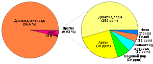

Вене́ра — вторая по удалённости от Солнца планета Солнечной системы, наряду с Меркурием, Землёй и Марсом принадлежит к семейству планет земной группы
Названа в честь древнеримской богини любви Венеры. Венерианский год составляет 224,7 земных суток. Она имеет самый длинный период вращения вокруг своей оси (243 земных суток) среди всех планет Солнечной системы и вращается в направлении, противоположном направлению вращения большинства планет
Венера не имеет естественных спутников. Это третий по яркости объект на небе Земли, после Солнца и Луны. Планета достигает видимой звёздной величины −4,6m — так что её яркости достаточно, чтобы отбрасывать тени ночью
Объём (V) 9,38⋅1011 км³
0,857 земных
Масса (m) 4,8675⋅1024 кг[2]
0,815 земны
Средний радиус 6051,8 ± 1,0 км
Площадь поверхности (S) 4,60⋅108 км²
0,902 земных
Общий размер 38,025 km
Венера вращается вокруг своей оси, наклонённой к плоскости орбиты на 177,36°, из-за этого при наблюдении со стороны северного полюса Мира планета вращается с востока на запад, то есть в направлении, противоположном направлению вращения большинства планет.
Один оборот вокруг оси занимает 243 земных суток. Комбинация этих движений даёт величину солнечных суток на планете 116,8 земных суток
Атмосфера Венеры состоит в основном из углекислого газа (96,5 %) и азота (3,5 %). Содержание других газов очень мало: диоксида серы — 0,018 %, аргона — 0,007 %, водяного пара — 0,003 %, у остальных составляющих — ещё меньше. В 2011 году учёные, работающие с аппаратом Venus Express, обнаружили у Венеры озоновый слой. Озоновый слой располагается на высоте 100 километров. Для сравнения, озоновый слой Земли располагается на высоте 15—20 километров, а концентрация озона в нём на несколько порядков больше.
Состав: ~96,5 % углекислый газ (CO2) ~3,5 % азот (N2) 0,018 % диоксид серы (SO2) 0,007 % аргон (Ar) 0,003 % водяной пар (H2O) 0,0017 % угарный газ (CO) 0,0012 % гелий (He) 0,0007 % неон (Ne) следы хлороводорода (HCl), фтороводорода (HF), криптона (Kr), ксенона (Xe) и др.
На поверхности 737 К[2][4] (464 °C)
Венера довольно интенсивно исследовалась с помощью космических аппаратов. Первым аппаратом, предназначавшимся для изучения Венеры, была советская «Венера-1», запущенная 12 февраля 1961 года; эта попытка оказалась неудачной. После этого к планете направлялись советские аппараты серии «Венера», «Вега», американские «Маринер», «Пионер-Венера-1», «Пионер-Венера-2», «Магеллан», европейский «Венера-экспресс», японский «Акацуки».
Земля и Венера имеют очень близкие размеры и массу, и они вращаются вокруг Солнца по очень сходным орбитам. Ее размер всего на 650 км меньше, чем размер Земли, а масса составляет 81,5% массы Земли
2. Планета может быть настолько яркой, что бросает тениТолько Солнце и Луна ярче, чем Венера. Ее яркость может варьироваться от -3,8 до -4,6 звездных величин, но она всегда ярче, чем самые яркие звезды на небе.
3.Враждебная атмосфераМасса атмосферы в 93 раза больше, чем атмосфера Земли. Давление на поверхности в 92 раза больше, чем давление на Земле. Это также, как если бы погрузиться на километр под поверхность океана
Вверх| Главная | Венера | Земля | Марс | Юпитер | Сатурн | Уран | Нептун |
|---|